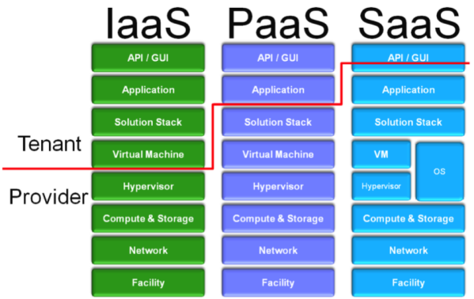

Cloud
Cloud environments
Ask to the client if the target Cloud:
• is on a third party provided infrastructure
◇
Check the contract to see if the Cloud provider allows or explicitly forbids security assessments or penetration
tests
◇ Usually cloud providers explicitly forbid security assessments or penetration tests unless you
specifically ask for and receive written permission
◇ Some cloud providers will simply provide the results for
their most recent assessment to their customers upon request
• is a private cloud run only by the
organization
Cloud Service Models
•
Infrastructure as a Service (IaaS) → The
provider supplies hardware and network connectivity. The
tenant(customer) is responsible for the virtual machine and everything
that runs within it
◇ Usually Cloud providers allow customers to perform application-level testing (such as
web application testing) but prohibit them from testing for underlying network and listening service flaws
examples: DigitalOcean, AWS EC2, Cisco Metapod, Azure VM, Google Compute Engine
(GCE)
•
Platform as a Service (PaaS) → The
provider supplies a framework with all the main components , the
tenant(customer) supplies the application they wish to deploy
◇
Usually Cloud providers allow customers to perform application-level testing (such as web application testing) but
prohibit them from testing for underlying network and listening service flaws
examples: Google Colab, AWS Elastic Beanstalk, Azure Cloud Services, Heroku,
Force.com, Google App Engine, Apache Stratos, OpenShift
•
Software as a Service (SaaS) → The
provider supplies the application and all the components required to
run it
◇ Usually Cloud providers prohibit customers from conducting their own tests, whether at the
network/service layer or the application layer
examples: Google Workspace,
Dropbox, Salesforce, Cisco WebEx, Concur, GoToMeeting, Azure Websites
The Cloud Stack
A cloud solution has different layers. The layers or components that go into building a cloud
solution are:
•
Facility → The actual physical building where
the cloud solution will be located.
•
Network → This can be a
physical or virtual network. It is responsible for carrying communications between systems and possibly the
Internet.
•
Compute and Storage → The physical hardware that
will supply CPU time as well as file storage.
•
Hypervisor →
This is an optional component. When virtualization is used to manage resources, the hypervisor is responsible for
allocating resources to each virtual machine. It may also be leveraged for implementing security.
•
Virtual Machine (VM) or Operating System (OS) → In a virtualized
environment, the VM is the virtual container responsible for running the operating system. If no hypervisor is
present, the operating system runs directly on the compute and storage hardware.
•
Solution Stack → This is the programming language used to build and
deploy applications. Good examples are .NET, Python, Ruby, Perl, etc.
•
Application → The actual application being used by one or more tenants,
or their customers.
•
Application Program Interface (API) or Graphical
User Interface (GUI) → The interface used by the tenant or their customers to interact with the
application.
The most common API is RESTful HTTP or HTTPS and the most common GUI is an HTTP or HTTPS based
Web site.
When we combine all of these layers, we get a cloud solution. As penetration testers, we need to be
able to identify which of these layers are in scope for our testing.
Bibliography:
•
https://www.sans.org/blog/pen-testing-in-the-cloud/•
https://www.bmc.com/blogs/saas-vs-paas-vs-iaas-whats-the-difference-and-how-to-choose/